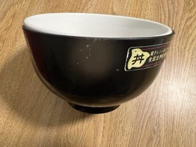
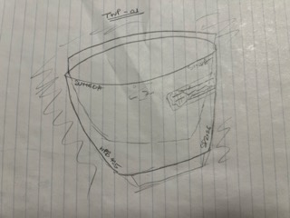
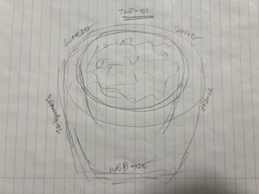

A few weeks ago, I had accidently left a white porcelain bowl in the sink without realizing there was a slightly bigger red-black plastic bowl underneath it. At some point the items must have shifted, and the plastic bowl expanded to fit almost cleanly around the glass bowl. Since I was unable to separate them, I was forced to throw them out. I'll briefly discuss the origins of these bowls in the next few paragraphs.
I had obtained the plastic bowl during my vacation in Japan back in 2019. It has a red inner layer and black outer layer. It stretches a bit when heated but otherwise it feels like any regular bowl. I took it with me to US as a one of my reminders of my old trip. The white porcelain bowl was purchased at a Walmart when I had moved to the US in 2022 to start my undergraduate studies at Rutgers. This marked one of my first purchases during my first ever trip to an American superstore (we don't really have such expansive stores back in India, so it was quite revealing), and I used it for probably more than a thousand times till the incident. Apart from the different texture compared to a plastic bowl, there's no discernable difference in how it feels or works.
A few days later, I found myself in my kitchen lacking any utensils for preparing meals, so I decided to do some dishes. I had just returned from an exhausting day of classes and proctoring a midterm, and the rest of the week was only going to get busier. There is a firm deadline for grading the exams, and I had some assignments to complete as well, so there was no option of delaying any tasks.
My first attempt was a result of basic human instinct and that was to simply use my hands to separate them. Sadly, I was only able to shuffle the edges around. Using a lubricant like dish soap, oil and vinegar to aid with the brute force method did not yield better outcomes. Frustrated, I reached out to my mother. She suggested I should try heating them up in a hot water bath to aid with the expansion of the plastic bowl and loosen its grip around the second bowl. Tragically, this did not fix the issue at hand. Standing alone at the counter, I felt defeated. I heated up a frozen pizza and handled the rest of the dishes. Days passed, and I just decided it was time to abandon hope.
Some interesting facts that I was able to find on the internet about the bowls:
Japan has a lot of unique bowls with their own cultural history, and they're made in different parts of the country depending on the purpose and type. In this case, the plastic melamine resin bowls are primarily made by MIYOSHI and DAISAKU, which have facilities in Tokyo (Ota-ku), Izunokuni City, Shizuoka and Muroran City, Hokkaido. However, some are also sourced from China. (Sources: Miyoshi, Daisaku, Made in China)
Walmart sources products from around the world. 60% of the shelf products are coming from China, with India following behind at 25%. Walmart is taking steps to ensure a more resilient supply chain amid increasing concerns and geopolitical tensions. (Sources: Walmart, NewsNation, Yahoo)
Porcelain has been used as an electrical insulator due to its insulation qualities at a reasonable price range (Sources: Wikipedia, Taylor Ceramics)